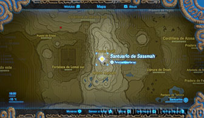
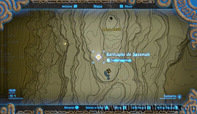
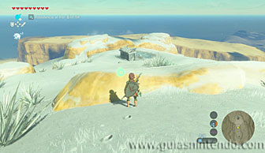
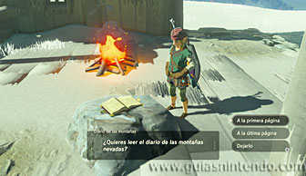
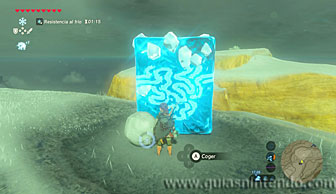
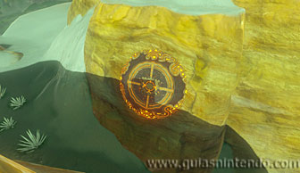
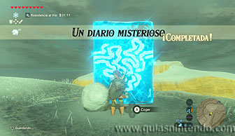
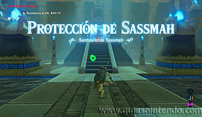

Puedes entrar en este santuario desde que llegas a la región de la torre del cañón, pero tendrás que completar primero una Prueba heroica (Un diario misterioso) para que la entrada aparezca.

Primero tendrás que subir el Monte Berill (protegiéndote del frío), lo encontrarás situado al sureste de la torre del cañón, a la derecha de una fortaleza. Allí no verás la entrada del santuario, pero encontrarás una cabaña en ruinas que contiene un diario. Si lo lees comenzará la Prueba heroica y te dará la pista para superarla.

Lo que debes hacer es lograr que una sombra tape la parte central de la plataforma que hay en la montaña frente a la cabaña cuando le esté dando el sol por la tarde. Puedes hacerlo de varios modos, cogiendo en tus manos una de las bolas de nieve grandes que hay por la zona y alineándote con la plataforma sobre las 4 de la tarde. También podrás crear un bloque de hielo en el pequeño lago que hay en el borde y él tapará la plataforma.

Si lo logras (no es necesario que se tape completamente, pero sí la zona central) la prueba heroica se completará y la entrada del santuario aparecerá cerca de la cabaña.

Ahora lo único que te queda es entrar en el santuario y dirigirte al altar para conseguir el símbolo de valía correspondiente. En el camino encontrarás un cofre que contiene una cimitarra de la luna.
